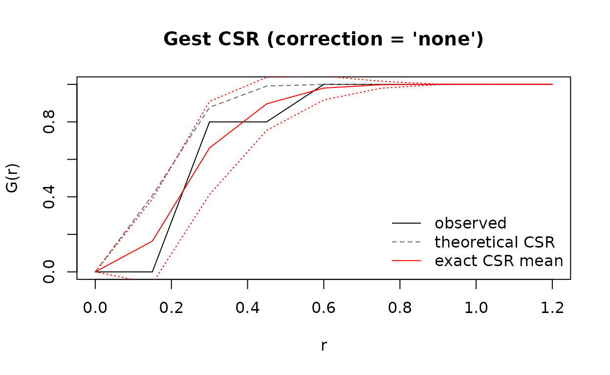

What the package does
permfreeG computes, in closed form, the mean and variance of the nearest-neighbour G function under the mark-permutation null. Instead of simulating thousands of permutations, it evaluates the exact moments directly, so a null band and pointwise z-scores are available immediately.
Two statistics are covered:
- exact_gest, the univariate nearest-neighbour G;
- exact_gcross, the bivariate cross nearest-neighbour G_{ij}.
Both accept a data frame with columns x, y (and optionally a mark column) or an existing spatstat ppp object.
Installation
# development version (the package lives on the dev branch)
remotes::install_github("ACSoupir/PermFree-NearestNeighborG", ref = "dev",
build_vignettes = TRUE)On macOS, if your R toolchain picks up a non-Apple compiler from the PATH, prepend /usr/bin before installing, or place an appropriate ~/.R/Makevars in your home directory.
A first univariate example
The package ships sim_nnG, a 30-point pattern with five marked points. This is the small example in which all choose(30, 5) = 142506 marked subsets could be enumerated by hand; the closed form must agree with their average.
suppressPackageStartupMessages(library(permfreeG))
str(sim_nnG)
#> 'data.frame': 30 obs. of 3 variables:
#> $ x: num 0.3063 0.0464 0.1158 0.8463 0.1939 ...
#> $ y: num 0.1894 0.596 0.0523 0.3627 0.3383 ...
#> $ m: Factor w/ 2 levels "A","B": 1 1 1 1 1 2 2 2 2 2 ...
radii <- seq(0, 1.2, by = 0.15)
res <- exact_gest(sim_nnG, radii = radii, mark_col = "m", marks_i = "A")
res
#> <nnG> Gest | correction = 'none' | method = 'exact' | exact
#> N = 30, n_i = 5
#> r theo obs csr_mean csr_var z p_value
#> 0.00 0.0000000 0.0 0.0000000 0.0000000000 NA NA
#> 0.15 0.4079349 0.0 0.1640577 0.0507345887 -0.72835721 0.4663949
#> 0.30 0.8771209 0.8 0.6610711 0.0617230019 0.55920241 0.5760236
#> 0.45 0.9910603 0.8 0.8960774 0.0199839112 -0.67964294 0.4967306
#> 0.60 0.9997720 1.0 0.9802282 0.0040159080 0.31199980 0.7550407
#> 0.75 0.9999980 1.0 0.9982485 0.0003489174 0.09376702 0.9252942
#> ... 9 rows total
res_df <- as.data.frame(res)The returned object has one row per radius:
- r, the radius;
- theo, the theoretical CSR curve G(r) = 1 - e^{-\lambda\pi r^2} using the observed intensity;
- obs, the observed curve for the marked points;
- csr_mean and csr_var, the exact null mean and variance from Theorems 1-2;
- z and p_value, pointwise departures of the observed curve from the exact null.
plot(res)
Because csr_var is exact rather than estimated, z has its usual interpretation at every radius simultaneously; no permutation noise inflates it.
Bivariate cross G
set.seed(7)
d3 <- data.frame(x = stats::runif(60), y = stats::runif(60),
m = sample(c("A", "B", "C"), 60, replace = TRUE))
gc <- exact_gcross(d3, radii = seq(0, 1.5, by = 0.15), mark_col = "m",
marks_i = "A", marks_j = "B")
gc
#> <nnG> Gcross | correction = 'none' | method = 'exact' | exact
#> N = 60, n_i = 19, n_j = 23
#> r theo obs csr_mean csr_var z p_value
#> 0.00 0.0000000 0.0000000 0.0000000 0.000000e+00 NA NA
#> 0.15 0.8721170 0.6315789 0.7307303 1.114183e-02 -9.393344e-01 0.3475591
#> 0.30 0.9997325 1.0000000 0.9920460 5.708467e-04 3.329103e-01 0.7392020
#> 0.45 1.0000000 1.0000000 0.9998792 7.685456e-06 4.355669e-02 0.9652578
#> 0.60 1.0000000 1.0000000 1.0000000 1.125424e-09 6.332699e-04 0.9994947
#> 0.75 1.0000000 1.0000000 1.0000000 5.803914e-15 1.756050e-06 0.9999986
#> ... 11 rows totalPassing the same mark twice (marks_i == marks_j) reduces to exact_gest with n equal to the observed count of that mark.
Edge corrections
Corrections are selected with correction. The raw curve is exact; the border (reduced sample) option uses a delta method built from exact moments, and han/km are mean-field curves with no closed-form variance.
pp <- spatstat.geom::ppp(d3$x, d3$y,
window = spatstat.geom::owin(c(0, 1), c(0, 1)),
marks = d3$m)
rr <- seq(0, 0.4, by = 0.05)
none_cur <- as.data.frame(exact_gest(pp, radii = rr, marks_i = "A"))
rs_cur <- as.data.frame(exact_gest(pp, radii = rr, marks_i = "A",
correction = "rs"))
data.frame(r = none_cur$r,
raw_mean = round(none_cur$csr_mean, 4),
rs_mean = round(rs_cur$csr_mean, 4),
raw_var = signif(none_cur$csr_var, 3),
rs_var = signif(rs_cur$csr_var, 3))
#> r raw_mean rs_mean raw_var rs_var
#> 1 0.00 0.0000 0.0000 0.00e+00 0.00e+00
#> 2 0.05 0.0885 0.0667 7.61e-03 7.06e-03
#> 3 0.10 0.3819 0.4127 1.88e-02 3.31e-02
#> 4 0.15 0.6461 0.7209 1.44e-02 2.32e-02
#> 5 0.20 0.8417 0.9357 7.12e-03 0.00e+00
#> 6 0.25 0.9428 0.9857 2.60e-03 0.00e+00
#> 7 0.30 0.9798 0.9992 9.71e-04 2.30e-04
#> 8 0.35 0.9931 1.0000 3.47e-04 2.91e-06
#> 9 0.40 0.9982 1.0000 9.52e-05 1.66e-07The border correction is undefined beyond the largest boundary distance; those rows are NA. See the “Supplement: edge corrections” vignette for the full derivation of each option, including which parts are exact.
Approximations when speed matters
Two knobs trade accuracy for time:
- covariance = FALSE drops the off-diagonal covariance terms, keeping only \sum_p e_p(1-e_p)/n^2. This is the independent-points approximation and costs O(RN) once neighbour counts are known.
- method = “approx” is the same thing expressed through the public interface.
fast <- exact_gest(sim_nnG, radii = radii, mark_col = "m", marks_i = "A",
method = "approx")
c(exact_variance = sum(res_df$csr_var),
approx_variance = sum(as.data.frame(fast)$csr_var))
#> exact_variance approx_variance
#> 0.1368083 1.1301893Permutation fallback
Nothing is hidden: the exact moments can always be checked against a real permutation run. permute_gest and permute_gcross draw uniform subsets (or disjoint label permutations) and recompute the statistic, optionally in parallel.
set.seed(1)
pm <- permute_gest(sim_nnG, radii = radii, mark_col = "m", marks_i = "A",
nsim = 200)
data.frame(r = radii,
exact_mean = round(res_df$csr_mean, 4),
perm_mean = round(pm$mean, 4),
exact_var = signif(res_df$csr_var, 3),
perm_var = signif(pm$var, 3))
#> r exact_mean perm_mean exact_var perm_var
#> 1 0.00 0.0000 0.000 0.00e+00 0.000000
#> 2 0.15 0.1641 0.169 5.07e-02 0.050300
#> 3 0.30 0.6611 0.674 6.17e-02 0.057200
#> 4 0.45 0.8961 0.914 2.00e-02 0.017900
#> 5 0.60 0.9802 0.981 4.02e-03 0.003460
#> 6 0.75 0.9982 0.998 3.49e-04 0.000398
#> 7 0.90 1.0000 1.000 1.96e-06 0.000000
#> 8 1.05 1.0000 1.000 7.12e-16 0.000000
#> 9 1.20 1.0000 1.000 7.12e-16 0.000000The two agree up to Monte Carlo error. The permutation route is the reference implementation, and it also supplies a variance for the han/km corrections, where no closed form is available.
Scaling
The exact engine stores neighbour sets as packed bit sets, so each pair intersection costs one word of population count rather than a set intersection. The result is that the whole variance curve for N = 250 at 151 radii takes a fraction of a second.
set.seed(1)
N <- 250
x <- stats::runif(N); y <- stats::runif(N)
grid <- seq(0, 1.5, length.out = 151)
t_exact <- system.time(
permfreeG:::csr_uni_moments_cpp(x, y, grid, 50L))[["elapsed"]]
t_approx <- system.time(
permfreeG:::csr_uni_moments_cpp(x, y, grid, 50L,
covariance = FALSE))[["elapsed"]]
c(N = N, radii = length(grid), exact_seconds = t_exact,
approx_seconds = t_approx)
#> N radii exact_seconds approx_seconds
#> 250.000 151.000 0.039 0.013